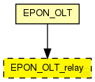
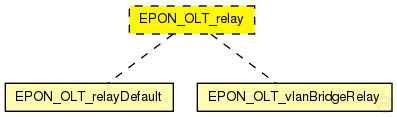

This documentation is released under the Creative Commons license
This documentation is released under the Creative Commons licenseTODO auto-generated module
The following diagram shows usage relationships between types. Unresolved types are missing from the diagram. 
The following diagram shows inheritance relationships for this type. Unresolved types are missing from the diagram. 
If a module type shows up more than once, that means it has been defined in more than one NED file.
| EPON_OLT (compound module) |
TODO auto-generated module |
| Name | Type | Default value | Description |
|---|---|---|---|
| addressTableFile | string |
set to empty string if not used |
|
| addressTableSize | int |
max size of address table |
|
| agingTime | double |
max idle time for address table entries (when it expires, entry is removed from the table) |
// // TODO auto-generated module // moduleinterface EPON_OLT_relay { parameters: string addressTableFile; // set to empty string if not used int addressTableSize; // max size of address table double agingTime @unit("s"); // max idle time for address table entries // (when it expires, entry is removed from the table) gates: input toPONin; // from OLT (EPON net) output toPONout; // to OLT (EPON net) input ethIn; // to other ports output ethOut; // to other ports }
This documentation is released under the Creative Commons license